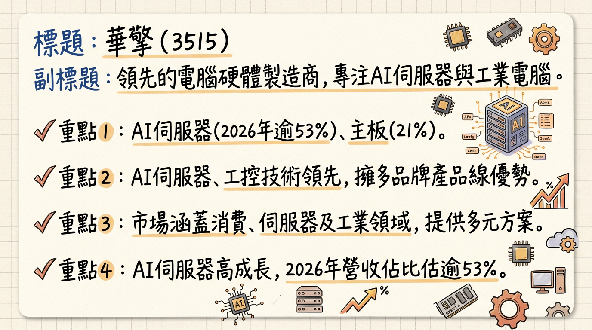
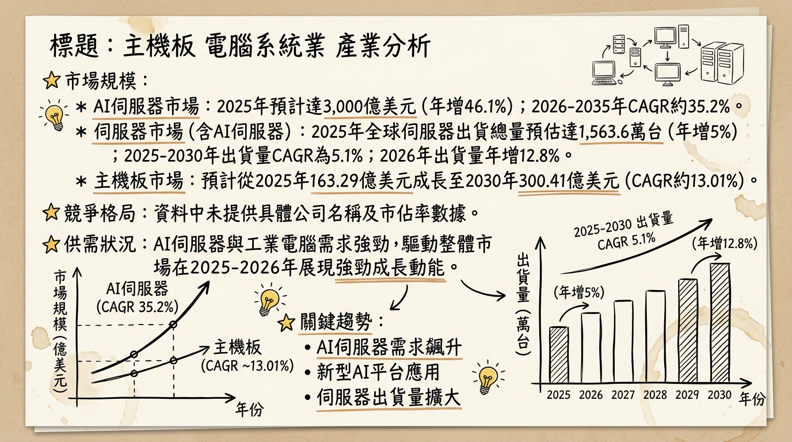
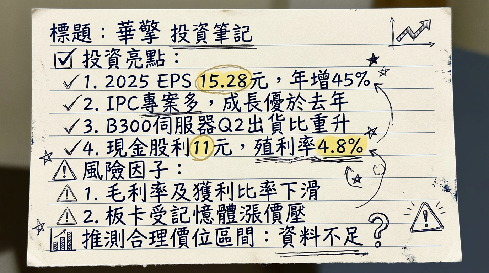

華擎（3515）受惠於AI伺服器與工業電腦（IPC）兩大引擎強勁成長，2025年營收與獲利顯著提升，2026年隨NVIDIA B300伺服器放量出貨及IPC大單落地，營運展望樂觀，訂單能見度已達下半年，惟產品組合變化導致毛利率面臨壓力及記憶體成本上漲為潛在風險。
華擎科技（3515）成立於2002年，從華碩分割而出，是全球領先的電腦硬體製造商。公司核心業務已從傳統主機板逐步多元化，產品線涵蓋主機板、顯示卡、電競顯示器、電源供應器、迷你電腦、工業電腦及伺服器（包含AI伺服器）。旗下擁有「華擎」（消費性產品）、「永擎電子」（ASRock Rack，專注伺服器）及「東擎科技」（ASRock Industrial，專注工業電腦）等品牌子公司。
華擎近年積極轉型，重心轉向高成長的AI伺服器與工業電腦領域。
| 業務類別 | 營收比重 (2025年Q3) |
|---|---|
| AI伺服器 | 43% |
| 主機板 | 21% |
| 伺服器 (通用型) | 14% |
| 其他 | 18% |
| 工業電腦 | 4% |
_註：法人預估AI伺服器佔華擎整體營收比重將持續上升，2025年預計達40%至41%，並在2026年擴大至53%至55%。_
| 月份 | 金額 (新台幣億元) | 月增率 (MoM) | 年增率 (YoY) |
|---|---|---|---|
| 2026年1月 | 66.35 | 72.01% | 40.76% |
| 2025年12月 | 38.57 | -36.81% | 45.45% |
| 2025年11月 | 61.04 | 63.00% | 76.00% |
| 2025年10月 | 37.45 | -27.00% | 21.00% |
| 2025年9月 | 51.21 | 39.00% | 151.00% |
| 2025年8月 | 36.97 | 29.00% | 66.00% |
| 年度 | 營收 (新台幣億元) | 年增率 (%) | EPS (新台幣元) | 年增率 (%) |
|---|---|---|---|---|
| 2024 | 256 | N/A | 10.54 | N/A |
| 2025 | 478.39 | 86.48% | 15.28 | 44.97% |
_註：本次法說會於本日舉行，其詳細內容與管理層給出的最新指引，目前無法從已發布的公開資訊中取得實時更新。以下重點內容綜合整理自2026年2月26日、2025年12月16日及2026年3月6日法說會前的相關報導。_
* 通用型伺服器： 出貨同步成長，預計維持穩健的雙位數年增長，毛利率與平均銷售單價 (ASP) 穩定。
* 主機板： 隨著市場殺價競爭緩解，ASP及獲利回歸正常，預期2026年第一季將有符合預期的表現。全年板卡產品力求維持與去年相當的水準。
* 顯示卡 (VGA)： 市場需求熱絡，受惠於AMD顯卡動能，預期動能持續，有望呈現逐季成長。
* 工業電腦 (IPC)： 旗下東擎受惠於歐美Cloud gaming客戶大單挹注及多個大型專案落地，預期2026年將有更顯著的成長，上半年表現強勁。
* 新產品 (電源供應器 / 顯示器)： 電源供應器業務表現漸入佳境，預期2026年將持續推進。
* 2026年上半年： 子公司東擎將受惠於歐美Cloud gaming客戶大單陸續出貨挹注，提升出貨動能。
* 2026年下半年： 伺服器業務表現有望比上半年更強勁，AI伺服器能見度已達下半年。
* 2026年全年： 華擎持續看好AI伺服器與通用型伺服器業務帶來的成長驅動力，仍將扮演重要角色。法人預估年度稅後純益有望較去年成長三成，EPS將落在19.77~23.58元之間。
| 券商名稱 | 目標價 (新台幣元) | 評等 | 報告日期 | 2025年預估EPS (新台幣元) | 2026年預估EPS (新台幣元) |
|---|---|---|---|---|---|
| 元大投顧 | 340 | 看多 | 2025/12/12 | 15.69 | 19.96 |
| Investing.com (平均) | 327.50 | N/A | 2026/03/03 | N/A | N/A |
| 法人機構平均預估 | N/A | N/A | 2026/02/11 | 15.28 (實際) | 19.77~23.58 |
_註：以上為公開資訊中可追溯至2024年以後的券商目標價及預估數字。_
| 季度 | 毛利率 (%) | 營業利益率 (%) | 稅後淨利率 (%) |
|---|---|---|---|
| 2025 Q4 | 12.78 | 5.61 | 4.76 |
| 2025 Q3 | 13.06 | 5.37 | 5.50 |
| 2025 Q2 | 13.84 | 5.77 | 4.27 |
| 2025 Q1 | 14.78 | 6.28 | 5.32 |
| 2024 Q4 | 15.45 | 5.76 | 5.45 |
| 2024 Q3 | 20.09 | 7.39 | 6.15 |
| 2024 Q2 | 22.55 | 7.25 | 6.66 |
| 2024 Q1 | 20.43 | 6.06 | 6.99 |
華擎利潤率自2024年高點逐漸下滑，主要原因為：
| 季度 | 存貨金額 (新台幣千元) | 存貨週轉天數 (天) | 應收帳款收現天數 (天) |
|---|---|---|---|
| 2025 Q4 | 13,227,326 | 91.51 | 23.45 |
| 2025 Q3 | N/A | 96.77 | 25.32 |
| 2025 Q2 | N/A | 92.33 | 20.88 |
| 2025 Q1 | N/A | 103.77 | 22.86 |
| 2024 Q4 | N/A | 109.34 | 22.53 |
| 2024 Q3 | N/A | 158.35 | 29.73 |
| 2024 Q2 | N/A | 172.43 | 34.95 |
| 2024 Q1 | N/A | 150.61 | 36.36 |
_註：季度存貨金額僅提供2025Q4資料，其餘未明確提供。_
分析：* 2024年度：每股配發6.9元現金股利。
* 2023年度：每股配發8.001元現金股利。
| 產業類別 | 2025年市場規模 (預估) | 2026年市場規模 (預估) | 2026-2035年CAGR (預估) |
|---|---|---|---|
| AI伺服器 | 1,484.3億美元 ~ 3,000億美元 | 1,691.8億美元 ~ 2,236.1億美元 | 15.25% ~ 35.2% |
| 伺服器 (含AI) | 1,563.6萬台 (出貨量，年增5%) | 年增12.8% (出貨量) | 5.1% (2025-2030) |
| 主機板 | 141.3億美元 ~ 163.29億美元 | N/A | 8.20% ~ 16.7% |
| 工業電腦 (IPC) | 56億美元 ~ 61億美元 | 63.6億美元 ~ 65.7億美元 | 3.86% ~ 7.6% |
| 產業類別 | 主要競爭者 |
|---|
由於缺乏直接針對華擎與主要競爭對手（如技嘉、微星、研華等）在技術、產能、客戶、價格等方面的最新（2025-2026年）詳細比較數據，以下根據公司業務特性和市場趨勢進行推斷性比較：
| 面向 | 華擎 (3515) | 主要競爭者 (例如：廣達、緯創、研華、華碩、技嘉、微星) |
|---|---|---|
| 技術 | AI伺服器： 永擎電子在NVIDIA/AMD平台整合能力強，尤其B300搶先放量。工業電腦： 東擎科技積極佈局邊緣AI、AIoT解決方案。主機板： 消費性市場在高階DIY與電競板卡有穩定地位。 | AI伺服器ODM巨頭(廣達/緯創)： 具備大規模整合能力與頂級CSP客戶合作經驗。IPC龍頭(研華)： 技術實力雄厚，積極轉型Edge AI，產品線完整。主機板(華碩/技嘉/微星)： 在消費性主機板與高階電競市場具領導地位。 |
| 產能 | 委外生產為主，彈性高。伺服器組裝集中台灣，佈局中國/越南，美國在地組裝備案。 | ODM巨頭： 具備全球大規模生產基地（如美墨泰國）以滿足CSP大單。IPC廠： 通常自有廠房搭配部分委外。主機板廠： 多數在中國/東南亞設有大規模生產基地。 |
| 客戶 | AI伺服器： 歐系客戶、美國/日本/歐洲二線CSP業者、AI新創。工業電腦： 北美串流服務商、智慧製造、工廠自動化、醫療等領域。 | ODM巨頭： 主力客戶為大型CSP（如Google, AWS, Meta, Microsoft）。IPC龍頭： 涵蓋多元產業如智能製造、智慧醫療、零售等。主機板廠： 廣大DIY用戶、電競玩家及系統整合商。 |
| 價格 | AI伺服器： 受零組件成本影響大，相對低毛利率，以規模量取勝。主機板： 消費性市場競爭激烈，高階產品ASP有優勢。工業電腦： 產品客製化程度高，毛利率相對穩定，注重解決方案價值。 | AI伺服器ODM巨頭： 以大規模採購與成本優勢競爭。主機板廠： 透過品牌、功能差異化及性價比策略競爭。IPC廠： 產品附加價值高，價格通常較穩定。 |
| 公司代碼與名稱 | 業務重疊領域 | 2025年實際營收 (新台幣億元) | 2025年預估毛利率 (%) | 2025年實際EPS (新台幣元) | 備註 |
|---|
華擎的資本支出相對穩健且聚焦於研發與測試，子公司永擎在2025年與2026年合計約1至2億元的資本支出主要用於提升研發、測試設備與水冷實驗室能力，而非擴建實體工廠。公司持續採用委外生產策略，台灣為主要伺服器組裝與出貨地，並佈局中國與越南產線，同時預先完成美國組裝備案以因應關稅及在地化需求，體現了其靈活的營運策略。
| 產業類別 | 2025年市場規模 (預估) | 2026年市場規模 (預估) | 2026-2035年CAGR (預估) | 趨勢說明 |
|---|---|---|---|---|
| AI伺服器 | 1,484.3億美元 ~ 3,000億美元 | 1,691.8億美元 ~ 2,236.1億美元 | 15.25% ~ 35.2% | 需求強勁，由NVIDIA Blackwell平台推動。 |
| 伺服器 (含AI) | 1,563.6萬台 (出貨量，年增5%) | 出貨量年增12.8% | 5.1% (2025-2030) | 整體伺服器市場受AI伺服器需求拉動而加速成長。 |
| 主機板 | 141.3億美元 ~ 163.29億美元 | N/A | 8.20% ~ 16.7% | 市場趨於高階化，DDR5等新技術導入驅動成長。 |
| 工業電腦 | 56億美元 ~ 61億美元 | 63.6億美元 ~ 65.7億美元 | 3.86% ~ 7.6% | 邊緣AI與數位轉型推動復甦，走出庫存調整低谷。 |
| 產業類別 | 主要競爭者 (2025-2026年相關) | 市場地位與備註 | ||
|---|---|---|---|---|
| AI伺伺服器 | 478.39 (實際) | 12.78 (2025Q4) | 15.28 (實際) | AI伺服器為主要成長動能，佔比持續提升；IPC業務復甦，拉動整體營運。 |
| 廣達 (2382) | 10,874 (實際) | 8.44 (實際) | 8.32 (實際) | AI伺服器龍頭之一，主要客戶為全球大型CSP，營收規模龐大。 |
| 緯創 (3231) | 8,671 (實際) | 6.94 (實際) | 5.15 (實際) | 同為AI伺服器主要供應商，積極擴充海外產能以因應需求。 |
| 技嘉 (2376) | 1,775 (實際) | 21.01 (實際) | 10.60 (實際) | 主機板與顯示卡業務為主，伺服器業務亦有佈局，受惠AI伺服器需求。 |
| 微星 (2377) | 1,933 (實際) | 24.31 (實際) | 10.69 (實際) | 主機板、顯示卡、電競筆電為主，在DIY與電競市場具高市佔率。 |
| 研華 (2395) | 694.4 (實際) | 39.81 (實際) | 12.91 (實際) | 工業電腦龍頭，持續深耕垂直市場與邊緣AI應用，獲利能力優異。 |
_註：同業數據為2025年實際營收、毛利率與EPS，資料來源主要為公開財報或法人預估。由於各公司產品組合差異大，直接比較毛利率或EPS需謹慎，此表主要提供參考。_
| 時間點 | 成長動能 | 具體內容 |
|---|---|---|
| 2025 Q4 | 新世代AI伺服器量產啟動 | 永擎電子啟動NVIDIA B300伺服器小量生產。 |
| 2025 Q4 - 2026 H1 | 資本支出提升研發與測試能力 | 永擎2025/2026年合計投入1至2億元資本支出，集中於研發與測試設備、量測能力與水冷實驗室，為未來水冷伺服器產品線做準備。 |
| 2026 Q1 | AI伺服器B300放量，成為主流成長動能 | NVIDIA B300伺服器逐步成為主流產品，出貨量預計將超越B200，推動營收顯著成長。 |
| 2026 Q1 | 工業電腦多專案落地 | 東擎科技多個大型專案開始落地貢獻營收，帶動IPC業務明顯成長。 |
| 2026 Q1 | 電源供應器業務持續推進 | 總經理許隆倫對電源供應器業務充滿信心，預期持續推進，成為新成長點。 |
| 2026 Q2 | AI伺服器B300出貨比重進一步提升 | 預計B300伺服器在整體AI伺服器出貨比重將持續拉高，強化獲利結構。 |
| 2026 Q2 | 工業電腦獲歐美Cloud gaming大單出貨 | 東擎科技受惠於歐美Cloud gaming客戶大單陸續出貨，進一步提升IPC出貨動能，上半年表現強勁。 |
| 2026 Q3 | AI伺服器訂單能見度延伸 | AI伺服器訂單能見度已達此季度，顯示客戶需求穩定且持續。 |
| 2026 H2 | AI伺服器業務表現預期更強勁 | 公司預期下半年伺服器業務表現將優於上半年，AI伺服器能見度已達下半年，主要客戶為北美、東北亞及亞洲AI需求。 |
| 長期 (2026+) | AI伺服器新客戶與新市場擴展 | 永擎客戶結構以全球AI新創為主（佔80%），並成功切入美國、日本、歐洲二線CSP業者，美洲客戶佔總營業額約12%，歐洲客戶為雲端服務商。 |
| 長期 (2026+) | 智慧物聯網 (AIoT) 應用拓展 | 積極拓展智慧物聯網應用市場，作為未來業績逐季上升的驅動力。 |
| 長期 (2026+) | 水冷散熱模組放量出貨 | 目前伺服器散熱以氣冷為主，預期2026年將放量出貨高單價、高毛利的水冷散熱模組，貢獻營收與獲利成長。 |
| 長期 (2026+) | 靈活產能應變全球市場需求 | 不設自有工廠，全面委外生產，台灣為主要組裝與出貨地，另布局中國與越南產線，並預先完成美國組裝備案，以因應關稅與在地化需求，確保產能彈性。 |
| 長期 (2026+) | 主機板/顯示卡業務高階化與AMD動能 | 主機板ASP因DIY市場高階化及AMD高階產品市佔提升而走高。顯示卡業務受惠於AMD動能，預期成長性佳，且AI卡的動能可望持續。 |
華擎2026年營運展望樂觀，主要驅動力來自：
綜合以上分析，我們對華擎（3515）維持正向看法，基於以下3-5點：
本報告由 AI 自動產生，資料來源為公開網路資訊，僅供參考，不構成投資建議。產生時間：2026-03-06 14:23


